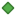

<!doctype html>
<html lang="en">
    <head>
        <meta charset="utf-8">
        <meta http-equiv="X-UA-Compatible" content="IE=edge">
        <meta name="viewport" content="initial-scale=1,user-scalable=no,maximum-scale=1,width=device-width">
        <meta name="mobile-web-app-capable" content="yes">
        <meta name="apple-mobile-web-app-capable" content="yes">
        <link rel="stylesheet" href="css/leaflet.css">
        <link rel="stylesheet" href="css/qgis2web.css"><link rel="stylesheet" href="css/fontawesome-all.min.css">
        <style>
        html, body, #map {
            width: 100%;
            height: 100%;
            padding: 0;
            margin: 0;
        }
        </style>
        <title></title>
    </head>
    <body>
        <div id="map">
        </div>
        <script src="js/qgis2web_expressions.js"></script>
        <script src="js/leaflet.js"></script>
        <script src="js/leaflet-svg-shape-markers.min.js"></script>
        <script src="js/leaflet.rotatedMarker.js"></script>
        <script src="js/leaflet.pattern.js"></script>
        <script src="js/leaflet-hash.js"></script>
        <script src="js/Autolinker.min.js"></script>
        <script src="js/rbush.min.js"></script>
        <script src="js/labelgun.min.js"></script>
        <script src="js/labels.js"></script>
        <script src="data/DpartementsPaysdelaLoire_1.js"></script>
        <script src="data/RgionPaysdelaLoire_2.js"></script>
        <script src="data/ProjetsMobilitligneferroviaire_3.js"></script>
        <script src="data/Projetsautresthmatique_4.js"></script>
        <script src="data/ProjetsRnovationthermique_5.js"></script>
        <script src="data/ProjetsMobilittransportscollectifs_6.js"></script>
        <script>
        var map = L.map('map', {
            zoomControl:true, maxZoom:28, minZoom:4
        }).fitBounds([[46.153284606944894,-2.6418979816179347],[48.693159392980554,1.024804642365186]]);
        var hash = new L.Hash(map);
        map.attributionControl.setPrefix('<a href="https://github.com/tomchadwin/qgis2web" target="_blank">qgis2web</a> &middot; <a href="https://leafletjs.com" title="A JS library for interactive maps">Leaflet</a> &middot; <a href="https://qgis.org">QGIS</a>');
        var autolinker = new Autolinker({truncate: {length: 30, location: 'smart'}});
        var bounds_group = new L.featureGroup([]);
        function setBounds() {
        }
        map.createPane('pane_OpenStreetMap_0');
        map.getPane('pane_OpenStreetMap_0').style.zIndex = 400;
        var layer_OpenStreetMap_0 = L.tileLayer('http://tile.openstreetmap.org/{z}/{x}/{y}.png', {
            pane: 'pane_OpenStreetMap_0',
            opacity: 1.0,
            attribution: '',
            minZoom: 4,
            maxZoom: 28,
            minNativeZoom: 0,
            maxNativeZoom: 18
        });
        layer_OpenStreetMap_0;
        map.addLayer(layer_OpenStreetMap_0);
        function pop_DpartementsPaysdelaLoire_1(feature, layer) {
        }

        function style_DpartementsPaysdelaLoire_1_0() {
            return {
                pane: 'pane_DpartementsPaysdelaLoire_1',
                opacity: 1,
                color: 'rgba(65,157,218,1.0)',
                dashArray: '',
                lineCap: 'butt',
                lineJoin: 'miter',
                weight: 1.0, 
                fill: true,
                fillOpacity: 1,
                fillColor: 'rgba(141,90,153,0.0)',
                interactive: true,
            }
        }
        map.createPane('pane_DpartementsPaysdelaLoire_1');
        map.getPane('pane_DpartementsPaysdelaLoire_1').style.zIndex = 401;
        map.getPane('pane_DpartementsPaysdelaLoire_1').style['mix-blend-mode'] = 'normal';
        var layer_DpartementsPaysdelaLoire_1 = new L.geoJson(json_DpartementsPaysdelaLoire_1, {
            attribution: '',
            interactive: true,
            dataVar: 'json_DpartementsPaysdelaLoire_1',
            layerName: 'layer_DpartementsPaysdelaLoire_1',
            pane: 'pane_DpartementsPaysdelaLoire_1',
            onEachFeature: pop_DpartementsPaysdelaLoire_1,
            style: style_DpartementsPaysdelaLoire_1_0,
        });
        bounds_group.addLayer(layer_DpartementsPaysdelaLoire_1);
        map.addLayer(layer_DpartementsPaysdelaLoire_1);
        function pop_RgionPaysdelaLoire_2(feature, layer) {
        }

        function style_RgionPaysdelaLoire_2_0() {
            return {
                pane: 'pane_RgionPaysdelaLoire_2',
                opacity: 1,
                color: 'rgba(101,0,156,1.0)',
                dashArray: '',
                lineCap: 'butt',
                lineJoin: 'miter',
                weight: 2.0, 
                fill: true,
                fillOpacity: 1,
                fillColor: 'rgba(232,113,141,0.0)',
                interactive: true,
            }
        }
        map.createPane('pane_RgionPaysdelaLoire_2');
        map.getPane('pane_RgionPaysdelaLoire_2').style.zIndex = 402;
        map.getPane('pane_RgionPaysdelaLoire_2').style['mix-blend-mode'] = 'normal';
        var layer_RgionPaysdelaLoire_2 = new L.geoJson(json_RgionPaysdelaLoire_2, {
            attribution: '',
            interactive: true,
            dataVar: 'json_RgionPaysdelaLoire_2',
            layerName: 'layer_RgionPaysdelaLoire_2',
            pane: 'pane_RgionPaysdelaLoire_2',
            onEachFeature: pop_RgionPaysdelaLoire_2,
            style: style_RgionPaysdelaLoire_2_0,
        });
        bounds_group.addLayer(layer_RgionPaysdelaLoire_2);
        map.addLayer(layer_RgionPaysdelaLoire_2);
        function pop_ProjetsMobilitligneferroviaire_3(feature, layer) {
            var popupContent = '<table>\
                    <tr>\
                        <td colspan="2"><strong>Thème</strong><br />' + (feature.properties['Thème'] !== null ? autolinker.link(feature.properties['Thème'].toLocaleString()) : '') + '</td>\
                    </tr>\
                    <tr>\
                        <td colspan="2"><strong>Projet</strong><br />' + (feature.properties['Projet'] !== null ? autolinker.link(feature.properties['Projet'].toLocaleString()) : '') + '</td>\
                    </tr>\
                    <tr>\
                        <td colspan="2"><strong>Coût </strong><br />' + (feature.properties['Coût '] !== null ? autolinker.link(feature.properties['Coût '].toLocaleString()) : '') + '</td>\
                    </tr>\
                    <tr>\
                        <td colspan="2"><strong>Subvention</strong><br />' + (feature.properties['Subvention'] !== null ? autolinker.link(feature.properties['Subvention'].toLocaleString()) : '') + '</td>\
                    </tr>\
                </table>';
            layer.bindPopup(popupContent, {maxHeight: 400});
        }

        function style_ProjetsMobilitligneferroviaire_3_0() {
            return {
                pane: 'pane_ProjetsMobilitligneferroviaire_3',
                opacity: 1,
                color: 'rgba(255,125,38,1.0)',
                dashArray: '',
                lineCap: 'square',
                lineJoin: 'bevel',
                weight: 2.0,
                fillOpacity: 0,
                interactive: true,
            }
        }
        map.createPane('pane_ProjetsMobilitligneferroviaire_3');
        map.getPane('pane_ProjetsMobilitligneferroviaire_3').style.zIndex = 403;
        map.getPane('pane_ProjetsMobilitligneferroviaire_3').style['mix-blend-mode'] = 'normal';
        var layer_ProjetsMobilitligneferroviaire_3 = new L.geoJson(json_ProjetsMobilitligneferroviaire_3, {
            attribution: '',
            interactive: true,
            dataVar: 'json_ProjetsMobilitligneferroviaire_3',
            layerName: 'layer_ProjetsMobilitligneferroviaire_3',
            pane: 'pane_ProjetsMobilitligneferroviaire_3',
            onEachFeature: pop_ProjetsMobilitligneferroviaire_3,
            style: style_ProjetsMobilitligneferroviaire_3_0,
        });
        bounds_group.addLayer(layer_ProjetsMobilitligneferroviaire_3);
        map.addLayer(layer_ProjetsMobilitligneferroviaire_3);
        function pop_Projetsautresthmatique_4(feature, layer) {
            var popupContent = '<table>\
                    <tr>\
                        <td colspan="2"><strong>Thème</strong><br />' + (feature.properties['Thème'] !== null ? autolinker.link(feature.properties['Thème'].toLocaleString()) : '') + '</td>\
                    </tr>\
                    <tr>\
                        <td colspan="2"><strong>Projet</strong><br />' + (feature.properties['Projet'] !== null ? autolinker.link(feature.properties['Projet'].toLocaleString()) : '') + '</td>\
                    </tr>\
                    <tr>\
                        <td colspan="2"><strong>Coût</strong><br />' + (feature.properties['Coût'] !== null ? autolinker.link(feature.properties['Coût'].toLocaleString()) : '') + '</td>\
                    </tr>\
                    <tr>\
                        <td colspan="2"><strong>Subvention</strong><br />' + (feature.properties['Subvention'] !== null ? autolinker.link(feature.properties['Subvention'].toLocaleString()) : '') + '</td>\
                    </tr>\
                </table>';
            layer.bindPopup(popupContent, {maxHeight: 400});
        }

        function style_Projetsautresthmatique_4_0() {
            return {
                pane: 'pane_Projetsautresthmatique_4',
                shape: 'diamond',
                radius: 5.999999999999998,
                opacity: 1,
                color: 'rgba(50,87,128,1.0)',
                dashArray: '',
                lineCap: 'butt',
                lineJoin: 'miter',
                weight: 2.0,
                fill: true,
                fillOpacity: 1,
                fillColor: 'rgba(72,123,182,1.0)',
                interactive: true,
            }
        }
        map.createPane('pane_Projetsautresthmatique_4');
        map.getPane('pane_Projetsautresthmatique_4').style.zIndex = 404;
        map.getPane('pane_Projetsautresthmatique_4').style['mix-blend-mode'] = 'normal';
        var layer_Projetsautresthmatique_4 = new L.geoJson(json_Projetsautresthmatique_4, {
            attribution: '',
            interactive: true,
            dataVar: 'json_Projetsautresthmatique_4',
            layerName: 'layer_Projetsautresthmatique_4',
            pane: 'pane_Projetsautresthmatique_4',
            onEachFeature: pop_Projetsautresthmatique_4,
            pointToLayer: function (feature, latlng) {
                var context = {
                    feature: feature,
                    variables: {}
                };
                return L.shapeMarker(latlng, style_Projetsautresthmatique_4_0(feature));
            },
        });
        bounds_group.addLayer(layer_Projetsautresthmatique_4);
        map.addLayer(layer_Projetsautresthmatique_4);
        function pop_ProjetsRnovationthermique_5(feature, layer) {
            var popupContent = '<table>\
                    <tr>\
                        <td colspan="2"><strong>Thème</strong><br />' + (feature.properties['Thème'] !== null ? autolinker.link(feature.properties['Thème'].toLocaleString()) : '') + '</td>\
                    </tr>\
                    <tr>\
                        <td colspan="2"><strong>Projet</strong><br />' + (feature.properties['Projet'] !== null ? autolinker.link(feature.properties['Projet'].toLocaleString()) : '') + '</td>\
                    </tr>\
                    <tr>\
                        <td colspan="2"><strong>Coût</strong><br />' + (feature.properties['Coût'] !== null ? autolinker.link(feature.properties['Coût'].toLocaleString()) : '') + '</td>\
                    </tr>\
                    <tr>\
                        <td colspan="2"><strong>Subvention</strong><br />' + (feature.properties['Subvention'] !== null ? autolinker.link(feature.properties['Subvention'].toLocaleString()) : '') + '</td>\
                    </tr>\
                </table>';
            layer.bindPopup(popupContent, {maxHeight: 400});
        }

        function style_ProjetsRnovationthermique_5_0() {
            return {
                pane: 'pane_ProjetsRnovationthermique_5',
                shape: 'diamond',
                radius: 5.999999999999998,
                opacity: 1,
                color: 'rgba(61,128,53,1.0)',
                dashArray: '',
                lineCap: 'butt',
                lineJoin: 'miter',
                weight: 2.0,
                fill: true,
                fillOpacity: 1,
                fillColor: 'rgba(84,176,74,1.0)',
                interactive: true,
            }
        }
        map.createPane('pane_ProjetsRnovationthermique_5');
        map.getPane('pane_ProjetsRnovationthermique_5').style.zIndex = 405;
        map.getPane('pane_ProjetsRnovationthermique_5').style['mix-blend-mode'] = 'normal';
        var layer_ProjetsRnovationthermique_5 = new L.geoJson(json_ProjetsRnovationthermique_5, {
            attribution: '',
            interactive: true,
            dataVar: 'json_ProjetsRnovationthermique_5',
            layerName: 'layer_ProjetsRnovationthermique_5',
            pane: 'pane_ProjetsRnovationthermique_5',
            onEachFeature: pop_ProjetsRnovationthermique_5,
            pointToLayer: function (feature, latlng) {
                var context = {
                    feature: feature,
                    variables: {}
                };
                return L.shapeMarker(latlng, style_ProjetsRnovationthermique_5_0(feature));
            },
        });
        bounds_group.addLayer(layer_ProjetsRnovationthermique_5);
        map.addLayer(layer_ProjetsRnovationthermique_5);
        function pop_ProjetsMobilittransportscollectifs_6(feature, layer) {
            var popupContent = '<table>\
                    <tr>\
                        <td colspan="2"><strong>Thème</strong><br />' + (feature.properties['Thème'] !== null ? autolinker.link(feature.properties['Thème'].toLocaleString()) : '') + '</td>\
                    </tr>\
                    <tr>\
                        <td colspan="2"><strong>Projet</strong><br />' + (feature.properties['Projet'] !== null ? autolinker.link(feature.properties['Projet'].toLocaleString()) : '') + '</td>\
                    </tr>\
                    <tr>\
                        <td colspan="2"><strong>Coût</strong><br />' + (feature.properties['Coût'] !== null ? autolinker.link(feature.properties['Coût'].toLocaleString()) : '') + '</td>\
                    </tr>\
                    <tr>\
                        <td colspan="2"><strong>Subvention</strong><br />' + (feature.properties['Subvention'] !== null ? autolinker.link(feature.properties['Subvention'].toLocaleString()) : '') + '</td>\
                    </tr>\
                </table>';
            layer.bindPopup(popupContent, {maxHeight: 400});
        }

        function style_ProjetsMobilittransportscollectifs_6_0() {
            return {
                pane: 'pane_ProjetsMobilittransportscollectifs_6',
                shape: 'diamond',
                radius: 5.999999999999998,
                opacity: 1,
                color: 'rgba(128,17,25,1.0)',
                dashArray: '',
                lineCap: 'butt',
                lineJoin: 'miter',
                weight: 2.0,
                fill: true,
                fillOpacity: 1,
                fillColor: 'rgba(255,125,38,1.0)',
                interactive: true,
            }
        }
        map.createPane('pane_ProjetsMobilittransportscollectifs_6');
        map.getPane('pane_ProjetsMobilittransportscollectifs_6').style.zIndex = 406;
        map.getPane('pane_ProjetsMobilittransportscollectifs_6').style['mix-blend-mode'] = 'normal';
        var layer_ProjetsMobilittransportscollectifs_6 = new L.geoJson(json_ProjetsMobilittransportscollectifs_6, {
            attribution: '',
            interactive: true,
            dataVar: 'json_ProjetsMobilittransportscollectifs_6',
            layerName: 'layer_ProjetsMobilittransportscollectifs_6',
            pane: 'pane_ProjetsMobilittransportscollectifs_6',
            onEachFeature: pop_ProjetsMobilittransportscollectifs_6,
            pointToLayer: function (feature, latlng) {
                var context = {
                    feature: feature,
                    variables: {}
                };
                return L.shapeMarker(latlng, style_ProjetsMobilittransportscollectifs_6_0(feature));
            },
        });
        bounds_group.addLayer(layer_ProjetsMobilittransportscollectifs_6);
        map.addLayer(layer_ProjetsMobilittransportscollectifs_6);
        var baseMaps = {};
        L.control.layers(baseMaps,{' Projets Mobilité - transports collectifs': layer_ProjetsMobilittransportscollectifs_6,' Projets Rénovation thermique': layer_ProjetsRnovationthermique_5,' Projets autres thématique': layer_Projetsautresthmatique_4,' Projets Mobilité - ligne ferroviaire ': layer_ProjetsMobilitligneferroviaire_3,' Région Pays de la Loire': layer_RgionPaysdelaLoire_2,' Départements Pays de la Loire': layer_DpartementsPaysdelaLoire_1,"OpenStreetMap": layer_OpenStreetMap_0,},{collapsed:false}).addTo(map);
        setBounds();
        </script>
    </body>
</html>
